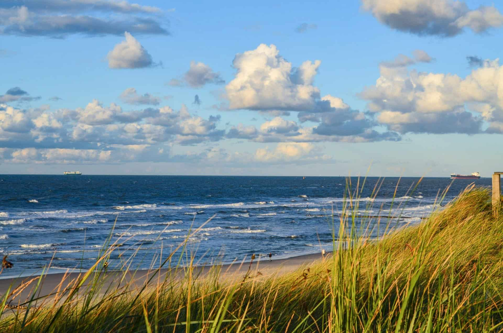

Чому варто обрати цей напрямок?
Відпочинок на Північному морі (узбережжя Німеччини, Нідерландів, Данії чи Великої Британії) ідеально підходить для спокійного релаксу, оздоровлення та поціновувачів дикої північної природи замість спекотного пляжного туризму!!!
Оренда житла
